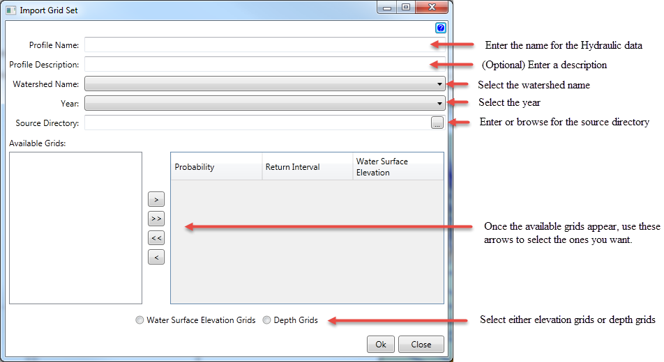

Import Grid Set
Hydraulic Grid Sets combine a series of depth or water surface elevation grids with frequencies to create a plan for HEC-FDA.
To create the proper specifications of the WSP file for HEC-FDA an invert value must be defined for each stationing, because of that requirement, a terrain dataset must be selected as a part of a Hydraulic Grid set. It is advised that the terrain used to produce the grid files should be selected.
Each WSP must be associated with a year, so a year selection based on the analysis years defined for the study has been provided.
HEC-FDA requires 8 frequency profiles to define a WSP. To meet these qualifications it is required that 8 grids are defined. Each grid must be associated with a frequency. Grids are expected to be tiled pyramidded compressed GeoTif files. If they are not, they will be converted when the user selects "Ok". Frequencies must be between 0 and 1. All grids must be either depth or water surface elevation grids.

To import a grid set, follow these steps:
- Enter the name of the hydraulic data.
- (Optional) Enter a description of the data.
- Select the watershed name.
- Select the year.
- Browse to the location of the gridded data.
- Use the arrows to select the available grids.
- Press the Ok button when finished, or press the close button to cancel.
Example

After clicking the Ok button...